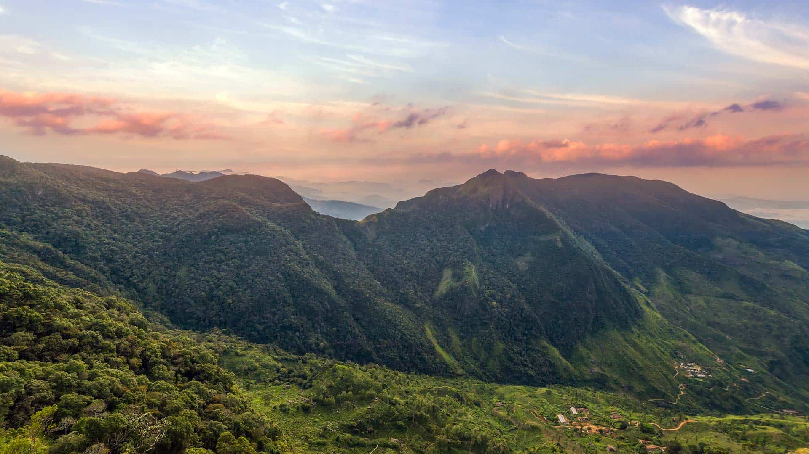

•Sinharaja Rain Forest

•Horton Plains
•Knuckles mountain range

| Location | Animal | Scientific name | Description |
|---|---|---|---|
| Sinharaja rainforest |
1.Sri Lankan Leopard |
Panthera pardus kotiya | •The elusive Sri Lankan leopard is the top predator in Sinharaja, and spotting one requires patience and luck. |
| 2.Purple-Faced Leaf Monkey | Semnopithecus vetulus | • Also known as the purple-faced langur, these leaf-eating monkeys are endemic to Sri Lanka and are commonly found in Sinharaja. | |
| 3.Sri Lanka Frogmouth | Batrachostomus moniliger | • A nocturnal bird with excellent camouflage, the Sri Lanka frogmouth is often challenging to spot due to its cryptic appearance. | |
| Horton plains |
1.Sambar Deer | Rusa unicolor | •The largest deer species in Sri Lanka, commonly seen grazing in the grasslands of Horton Plains. |
| 2.Purple-Faced Langur | Trachypithecus vetulus | • An endemic primate species with a distinct appearance, often found in the forested areas of the park. | |
| 3.Rusty-Spotted Cat | Prionailurus rubiginosus | •Prionailurus rubiginosus One of the smallest wildcat species in the world, and the smallest cat in Sri Lanka, occasionally found in Horton Plains. | |
| Knuckles mountain range |
1.Sri Lankan Elephant | Elephas maximus maximus | •While not as common as in some other regions of Sri Lanka, elephants can be found in the more remote parts of the Knuckles. |
| 2.Mountain Hawk-Eagle | Nisaetus nipalensis | • A raptor species that soars above the mountains, preying on smaller birds and mammals. | |
| 3.Sri Lanka Wood Pigeon | Columba torringtoniae | • An endemic bird species found in the montane forests of the Knuckles. | |
| @Wildlife Sri Lanka | |||
Sri Lankan Leopard
Purple-Faced Leaf Monkey
Sri Lanka Frogmouth

Sambar Deer

Purple-Faced Langur

Rusty-Spotted Cat
Sri Lankan Elephant

Mountain Hawk-Eagle
Sri Lanka Wood Pigeon